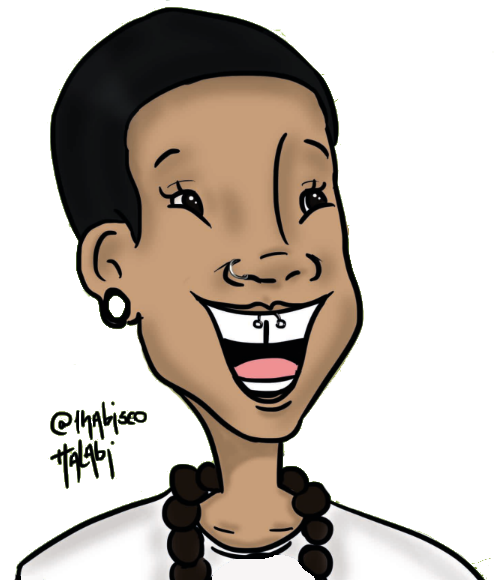

Karolina Silva
Desenvolvedora Front-End em Formação
Olá!!! Boas vindas ao meu primeiro portfólio online, fruto dos estudos realizados na formação do PretaLab/Olabi.
Me chamo Karolina, sou uma mulher negra, graduanda em Educação Física pela Universidade Federal da Paraíba (UFPB);
participando do Ciclo Formativo em Tecnologia PretaLab, onde temos focando no desenvolvimento Front-end, utilizando
HTML5, CSS3 e JS.
Essa é uma jornada nova, repleta de desafios e também muito empolgante. Logo mais atualizarei as novidades por aqui!
Essa é uma jornada nova, repleta de desafios e também muito empolgante. Logo mais atualizarei as novidades por aqui!